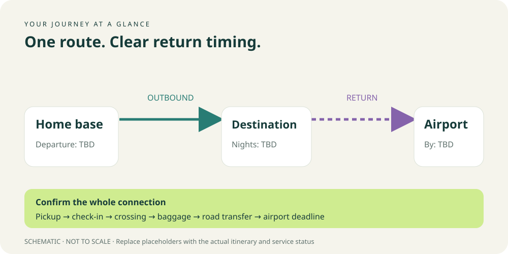

Personal travel handbook
Your next chapter.
A thoughtful route.
Where you are going, how to get there, and what is decided.
Working plan: No dates, transport or hotel bookings are selected in this starter.
Your route 旅行路线

Current arrangements 当前安排
Undecided Record the user's actual selection here. Comparing a hotel does not select or book it.
Link to the hotel decisions page once that page exists.
Daily schedule 每日行程
| Date / local time | Activity / transport | Overnight | Status |
|---|---|---|---|
| To be supplied | Add door-to-door timing and transfer allowances | Undecided | Planning placeholder |
Hard deadline: Enter the user's arrival deadline separately from the service departure time.
Sources and confirmations
Record source links, checked dates, assumptions and questions to confirm. Do not present example prices or schedules as live facts.